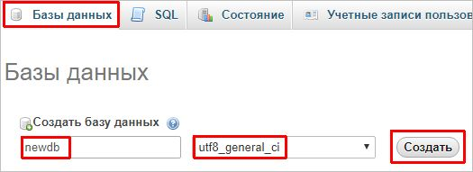
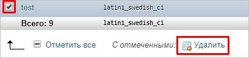

Обновлено: 24.09.2018 Опубликовано: 01.08.2016
Обновлено: 24.09.2018 Опубликовано: 01.08.2016 Создание и удаление баз в MySQL/MariaDB
Обновлено: 13.10.2017 Опубликовано: 10.08.2016
Тематические термины: MySQL, MariaDB, phpMyAdmin.
В данных примерах используется командная оболочка mysql и phpMyAdmin.
Подключение к СУБД
Создание новой базы
Командная строка
phpMyAdmin
Создание пользователя
Удаление базы
Командная строка
phpMyAdmin
Для начала заходим в среду управления MySQL.
В Linux вводим команду:
# mysql -uroot -p
В Windows переходим в каталог, с установленной СУБД и запускаем одноименную команду mysql, например:
cd "%ProgramFiles%\MySQL\MySQL Server 5.5\bin\"
mysql -u root -p
* в приведенных примерах идет подключение к mysql/mariadb под учетной записью root с запросом пароля.
Используйте данный шаблон команды:
mysql> CREATE DATABASE newdb DEFAULT CHARACTER SET utf8 DEFAULT COLLATE utf8_general_ci;
* вышеописанная команда создаст базу данных с названием newdb и кодировкой UTF-8 (самая распространенная и универсальная).
Проверить, что база появилась можно командой:
mysql> show databases;
В phpMyAdmin переходим в раздел Базы данных - вводим название новой базы - выбираем кодировку и нажимаем Создать:

Чтобы к созданной базе можно было подключиться, сразу добавим пользователя:
mysql> GRANT ALL PRIVILEGES ON newdb.* TO dbuser@localhost IDENTIFIED BY 'password' WITH GRANT OPTION;
* где newdb.* — наша база и все ее таблицы; dbuser@localhost — имя учетной записи, которая будет подключаться с локального сервера; password — придуманный нами пароль.
** В данном примере, учетной записи будут предоставлены полные права. Подробнее о правах в MySQL читайте статью Как создать пользователя MySQL и дать ему права.
Попробуем удалить ранее созданную базу:
mysql> DROP DATABASE newdb;
Выбираем нужную базу галочкой и кликаем по Удалить:

# Серверы # Базы данных # MySQL
Создание пользователей MySQL/MariaDB и предоставление прав доступа
Обновлено: 24.09.2018 Опубликовано: 01.08.2016
Тематические термины: MySQL, MariaDB.
Учетные записи в СУБД MySQL/MariaDB представлены в виде связки <имя пользователя>@<удаленный хост, с которого можно подключаться>. Это может вызвать путаницу, поэтому необходимо быть внимательнее, например, учетные записи root@localhost и root@192.168.0.15 — разные.
Создать пользователя
Посмотреть пользователей
Сменить пароль
MySQL
MariaDB
Суперпользователю
Примеры
Особые права
Удаленное подключение
Права на резервное копирование
С правами подключения к определенной таблице
Возможные ошибки
Синтаксис:
mysql> GRANT <тип привилегий> ON <объект> TO <пользователь> [IDENTIFIED BY <пароль>] <дополнительные опции>;
Например, эта команда предоставляет права доступа пользователю и, если его не существует, создает его:
mysql> GRANT ALL PRIVILEGES ON *.* TO 'dbuser'@'localhost' IDENTIFIED BY 'password' WITH GRANT OPTION;
Описание команды:
ALL PRIVILEGES: предоставляет полные права на использование данных.
*.* : права предоставляются на все базы и все таблицы.
dbuser: имя учетной записи.
localhost: доступ для учетной записи будет предоставлен только с локального компьютера.
password: пароль, который будет задан пользователю.
WITH GRANT OPTION: будут предоставлены дополнительные права на изменение структуры баз и таблиц.
Посмотреть существующих пользователей и их привилегии
Список пользователей:
mysql> SELECT user, host FROM mysql.user;
Список привилегий (для кажого пользователя смотряться отдельно):
mysql> SHOW GRANTS FOR 'root'@'localhost';
* где 'root'@'localhost' — учетная запись, для которой смотрим привилегии; если упустить FOR, команда выдаст результат для пользователя, под которым выполнено подключение к СУБД.
Версия 5.7.6 и более современная:
mysql> ALTER USER 'root'@'localhost' IDENTIFIED BY 'New_Password';
*** mysql> ALTER USER admin@localhost IDENTIFIED BY 'myub485127sav';
ALTER USER admin@192.168.1.42 IDENTIFIED BY 'myub485127sav';
ALTER USER alensav@192.168.1.42 IDENTIFIED BY 'myub485127sav';
ALTER USER alensav@localhost IDENTIFIED BY 'myub485127sav';
Версия 5.7.5 и древнее:
mysql> SET PASSWORD FOR 'root'@'localhost' = PASSWORD('New_Password');
* посмотреть версию СУБД можно командой mysql -V.
mysql> SET PASSWORD FOR 'root'@'localhost' = PASSWORD('New_Password');
Смена пароля пользователю root
Первый раз пароль задается из командной строки операционной системы (для MySQL/MariaDB):
mysqladmin -u root password
Для смены пароля root необходимо выполнить команду в оболочке mysql по инструкции, описанной выше.
Рассмотрим часто встречаемые операции по работе с пользователями сервера баз данных.
Предоставление особых прав пользователю:
mysql> GRANT SELECT, UPDATE ON base1.* TO 'dbuser'@'localhost' IDENTIFIED BY 'password';
* права на выборку и обновление данных во всех таблицах базы base1 для пользователя dbuser
** список всех возможных прав: all privileges, alter, create, create temporary tables, delete, drop, execute, file, index, insert, lock tables, process, references, reload, replication client, replication slave, select, show databases, shutdown, super, update, usage
Разрешение на удаленное подключение и использование базы MySQL:
mysql> GRANT ALL PRIVILEGES ON *.* TO 'dbuser'@'192.168.0.55' IDENTIFIED BY 'password';
* предоставит права пользователю dbuser, который будет подключаться с компьютера с IP-адресом 192.168.0.55.
3. Права на резервное копирование
Создание учетной записи MySQL с правами создания резервных копий:
mysql> GRANT SELECT, SHOW VIEW, RELOAD, REPLICATION CLIENT, EVENT, TRIGGER, LOCK TABLES ON *.* TO 'backup'@'localhost' IDENTIFIED BY 'backup';
4. Права доступа к определенной таблице
По сути, это такое же предоставление прав, но с указанием конкретной таблицы после базы:
mysql> GRANT ALL PRIVILEGES ON base1.table1 TO 'dbuser'@'localhost' IDENTIFIED BY 'password';
* в данном примере предоставлены все права на таблицу table1 в базе base1.
1. ERROR 1819 (HY000): Your password does not satisfy the current policy requirements
Причина: в новых версиях по умолчанию активированы политики на проверку сложности пароля. Их список можно посмотреть командой:
> SHOW VARIABLES LIKE 'validate_password%';
Вывод команды будет, примерно, следующим:
+--------------------------------------+--------+
| Variable_name | Value |
+--------------------------------------+--------+
| validate_password_check_user_name | OFF |
| validate_password_dictionary_file | |
| validate_password_length | 8 |
| validate_password_mixed_case_count | 1 |
| validate_password_number_count | 1 |
| validate_password_policy | MEDIUM |
| validate_password_special_char_count | 1 |
+--------------------------------------+--------+
* где:
Решение:
> SET GLOBAL validate_password_number_count = 0;
2. ERROR 1728 (HY000): Cannot load from mysql.tables_priv. The table is probably corrupted
Причина: система считает, что таблица tables_priv в базе mysql неисправна.
Решение: чаще всего, ошибка возникает при переносе баз с одного сервера в другой. Если версии СУБД разные, таблица tables_priv может работать со сбоями. Для исправления необходимо выполнить команду mysql_upgrade — она проверяет все таблицы на совместимость с текущей версией MySQL/MariaDB и вносит исправления. Применение команды:
mysql_upgrade -u root -p